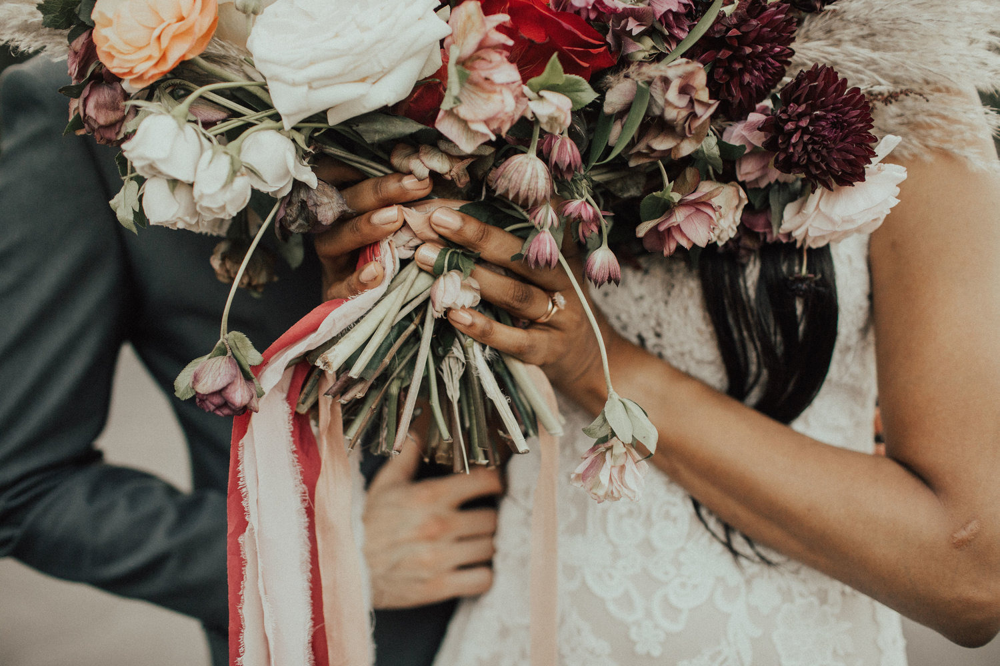

Don’t Talk While Hungry (and Other Marriage Lessons)
Today, it’s been six months since Dan and I got married. I haven’t written anything in awhile, because my brain and heart have just been too full - full of wedding plans, apartment set up, and many transition-related feelings. It was just too much to sift through, and while I planned to start blogging again in the fall during my break from school, as usual that turned out to be a little too ambitious. Will I ever learn? Probably not. It’s fine. IT’S FINE.
I’ve spent a lot of time listening to Emily P. Freeman’s podcast, The Next Right Thing, over the past year. She shares a lot of thoughts about creating space for your soul to breathe - something that fits well with many of the things that have been happening in my own heart for the past few years. In some of my posts from almost two years ago, I wrote about how I’m learning to rest. Of course, at the start of this journey, I thought I would be an expert at rest in approximately three months. Maybe four, tops. But like most things, it takes time.
In the podcast, one thing Emily emphasizes is the importance of stopping
to reflect. She writes a post called What I’ve Learned
four times
per year - once in the Spring, once in the Summer, once in the Fall,
and once in the Winter.
This is something that I’m hoping to start doing fairly soon. For now, I thought I would apply it to our first six months of marriage. This is by no means an exhaustive list, but I wanted to write down some thoughts in the hope that I can come back and read it six months from now, a year from now - whenever it might be needed.
- Don’t talk about serious things when one or both of you are hungry (I think the reasoning behind this is self-explanatory).
- It’s okay to have interests that are different (in reference to my repeated attempts to make Dan like the same TV shows as me).
- Meal planning on the weekend is hard, but really makes the week so much smoother and more enjoyable (refer to the first point above).
- We are both stubborn, and want to be in control (myself probably more than Dan), and marriage reveals this more than I’m comfortable with. Thankfully, we don’t have to try and have a perfect marriage, and we don’t have to do it alone.
- Regular connection with goods friends is just as important as it always has been.
So, that’s it. Nothing earth shattering, or new, really. But I’m grateful for these lessons, and for all the lovely people who have made these months special.
When it comes to rest, a concept that has been challenging for me for many years, no one has taught me more than Dan. He helps me rest in so many ways, and that has been the greatest gift of the past six months.
Also, he makes me waffles.
Below are some wedding photos, since I never really posted any. Thank you to everyone who has been so supportive and loving toward us! We are so grateful for you.
PS: If you want my list of meal prep recipes, you can download it here!